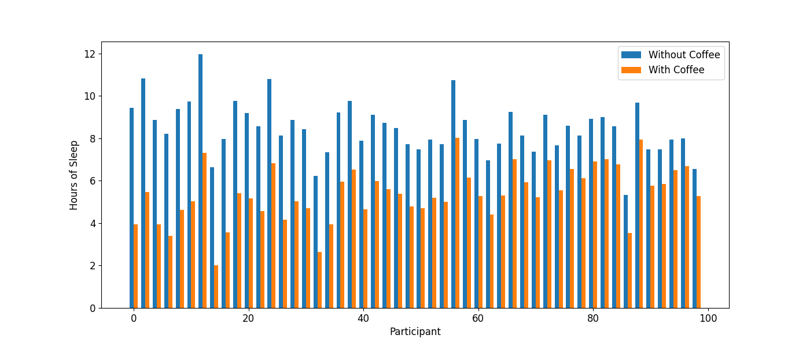

Coffee export
Final Project Data Visualization
Dalla pianta alla tazzina, il viaggio del caffè. Un tuffo tra produzione e consumazione, osservando anche gli effetti sull’essere umano.
Introduzione
Qui va l'introduzione'.
Coffee export for the highest producing countries world wide until 2013
Qui va la descrizione.
Top 5 coffee exporting countries in time to 2013
Qui va la descrizione.
Mean Number of Steps per Day vs. Participant ID

Qui va la descrizione.